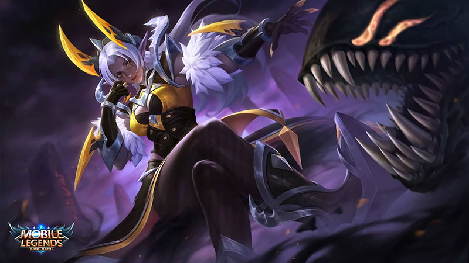
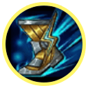
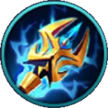
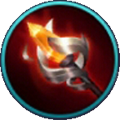
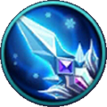

Skill & Build Hero Selena
Friday, August 3, 2018 9:05 AM

Selena adalah hero mage assassin yang memiliki dua tipe serangan dengan fungsi yang berbeda tapi saling membutuhkan. Karena kondisi tersebut, memainkan Selena seperti memainkan dua hero sekaligus dengan peran dan kombinasi yang saling bersimbiosis.
Bisa dibilang, Selena adalah hero yang mengharuskan pemainnya untuk mengambil keputusan penting setiap saat, sambil menimbang baik buruknya keputusan yang diambil saat itu.
Kelebihan
- Potensi Burst damage yang tinggi
- Memiliki crowd control yang baik
- Mobilitas cukup baik
Kekurangan
- Durability sangat rendah
- Sulit untuk digunakan
- Presencenya cukup buruk di team fight
Skill Selena
a. Symbiosis
Selena memiliki dua wujud. Dalam wujud Elven, setiap skillnya akan memberikan Abyssal Mark pada musuhnya hingga maksimal dua buah Abyssal Mark. Dalan wujud Abyssal, setiap skill yang mengenai musuh tersebut akan memakai satu mark untuk memberikan tambahan 290-500magic damage.
b. Abyssal Trap
 Selena memanggil Abyssal Devil di lokasi yang ditentukan. Bila musuh datang mendekat, Abyssal Devil akan memberikan magic damage dan pengurangan movement speed sebesar 40 persen selama 2 detik.
Selena memanggil Abyssal Devil di lokasi yang ditentukan. Bila musuh datang mendekat, Abyssal Devil akan memberikan magic damage dan pengurangan movement speed sebesar 40 persen selama 2 detik.
Selena dapat memanggil hingga 3 Abyssal Devil, dan damage pada target yang sama akan dikurangi bila musuh terkena Abyssal Devil berkali-kali.
- Cooldown: 8/7,6/7,2/6,8/6,4/6 detik
- Mana: 60/70/80/90/100/110 mana
- Damage: 350/390/430/470/510/550 magical damage
- Slow: 40 persen untuk 2 detik
Selain memberikan damage dan mark, Abyssal Trap bisa digunakan sebagai ward atau observer bagi Selena. Yang perlu dilakukan oleh Selena adalah memasang Abyssal Trap di tempat yang biasa dilalui musuh agar dia bisa melihat siapa yang lewat di wilayah tersebut.
c. Abyssal Arrow
 Selena menembakkan panah Abyssal ke arah yang ditentukan. Musuh yang terkena akan menerima magic damage dan terkena stun selama 0,5-4,5 detik. Damage dan durasi stun bertambah sesuai dengan jarak yang ditempuh Abyssal Arrow. Abyssal Arrow ini dapat menarik satu Abyssal Trap yang berada sepanjang jalan ke arah target yang ditunjuk.
Selena menembakkan panah Abyssal ke arah yang ditentukan. Musuh yang terkena akan menerima magic damage dan terkena stun selama 0,5-4,5 detik. Damage dan durasi stun bertambah sesuai dengan jarak yang ditempuh Abyssal Arrow. Abyssal Arrow ini dapat menarik satu Abyssal Trap yang berada sepanjang jalan ke arah target yang ditunjuk.
- Cooldown: 12 detik
- Mana: 70/80/90/100/110/120 mana
- Damage: 250/280/310/340/370/400 magical damage
- Stun: 0,5-4,5 detik
Abyssal Arrow adalah disable dengan potensi paling mengerikan milik Selena. Kemampuannya untuk menghentikan lawan selama 4,5 detik tidak bisa dipandang sebelah mata apalagi di Mobile Legends yang permainannya terkenal cepat dan damage dari _skill cenderung sangat besar.
Satu-satunya kelemahan Abyssal Arrow terletak pada kecepatan proyektilnya yang lambat sehingga cukup mudah untuk dihindari. Jadi usahakan untuk menggunakan Abyssal Arrow dari jauh agar musuh tidak bisa menduga arah datangnya Abyssal Arrow.
d. Primal Darkness
 Selena memasuki wujud Abyssal dan mendapatkan tambahan movement speed sebesar 30 persen untuk beberapa saat. Dalam wujud ini, dia dapat menggunakan skill Abyssal dan serangan biasanya mendapatkan bonus _ magic damage_.
Selena memasuki wujud Abyssal dan mendapatkan tambahan movement speed sebesar 30 persen untuk beberapa saat. Dalam wujud ini, dia dapat menggunakan skill Abyssal dan serangan biasanya mendapatkan bonus _ magic damage_.
- Cooldown: 4,5/4,0/3,5/3 detik
- Movement speed: 30/35/40/45 persen
- Damage: 25 persen magic power
Primal Darkness merupakan skill yang tersedia dari awal sehingga kamu bisa berubah ke wujud Abyssal ataupun Eleven kapanpun. Saat berubah, kamu mendapatkan tambahan movement speed sehingga kamu bisa saja melakukan berganti-ganti wujud, saat engage maupun disengage.
e. Soul Eater
 Selena menggunakan kekuatan Abyssal untuk memberikan tambahan magic damage pada satu serangan berikutnya, sekaligus mendapatkan perisai yang menahan damage. Serangan ini memiliki properti basic attack, jadi kamu tetap harus menekan tombol basic attack setelah mengaktifkan Soul Eater.
Selena menggunakan kekuatan Abyssal untuk memberikan tambahan magic damage pada satu serangan berikutnya, sekaligus mendapatkan perisai yang menahan damage. Serangan ini memiliki properti basic attack, jadi kamu tetap harus menekan tombol basic attack setelah mengaktifkan Soul Eater.
- Cooldown: 8/7,6/7,2/6,8/6,4/6 detik
- Mana: 60/70/80/90/100/110 mana
- Damage: 300/320/340/360/380/400 magical damage
- Shield: 300/320/340/360/380/400 shield
Soul Eater merupakan sumber burst damage utama dari Selena. Serangan ini akan memberikan magic damage yang cukup besar sekaligus mengaktifkan Unique Passive yang dimiliki oleh setiap equipment yang kamu buat.
f. Garrote
Selena menerjang ke arah yang ditentukan, memberikan magic damage ke seluruh musuh di sepanjang jalan. Jika skill ini mengenai Abyssal Mark, cooldown dari skill ini akan langsung direset.
- Cooldown: 12 detik
- Mana: 70/80/90/100/110/120 mana
- Damage: 150/190/230/270/310/350 magical damage
Garrote merupakan skill yang bisa digunakan untuk engage dan disengage saat berada dalam wujud Abyssal. Karena memiliki cooldown yang cukup lama, kamu harus berhati-hati ketika menggunakan Garrote. Jangan sampai skill ini tidak tersedia saat kamu hendak mengejar musuh yang melarikan diri, ataupun disengage dari team fight.
g. Blessing of the Moon God
 Mengembalikan Selena ke wujud Elven. Memberikan tambahan movement speed sebesar 30 persen untuk beberapa saat, dan mengembalikan skill Elven miliknya.
Mengembalikan Selena ke wujud Elven. Memberikan tambahan movement speed sebesar 30 persen untuk beberapa saat, dan mengembalikan skill Elven miliknya.
- Cooldown: 4,5/4,0/3,5/3 detik
- Movement speed: 30/35/40/45 persen
Sama dengan Primal Darkness, Blessing of the Moon God juga sudah tersedia dari awal, sehingga fungsinya juga mirip-mirip.
Gear Build Selena
| Nama | Gambar | Info |
|---|---|---|
| Rapid Boots |  | Selena sangat membutuhkan movement speed agar bisa roaming dengan bebas, karena itu dia bisa menggunakan Rapid Boots yang memiliki 100 movement speed dari awal. Bila dimanfaatkan dengan maksimal, Rapid Boots akan menjadikan Selena sebagai assassin yang sangat lincah dan sulit ditangkap musuh. |
| Lightning Truncheon |  | Equipment ini akan memberikan magic damage dan kemampuan Unique Passive Resonate bagi Selena. Kemampuan Unique Passive itu akan memberikan damage tambahan setiap 6 detik sekali yang damagenya bergantung pada jumlah mana yang dimiliki Selena. |
| Glowing Wand |  | Equipment ketiga yang bisa dipilih Selena adalah Glowing Wand. Equipment ini memiliki status berupa 75 magic power, 400 HP dan lima persen movement speed. Selain ketiga status utama yang ditawarkan oleh Glowing Wand, equipment ini memiliki Unique Passive berupa Scorch. Saat aktif, Glowing Wand akan membakar HP target yang terkena skill sebesar 2/3/4 persen dari HP yang dimiliki target saat itu. |
| Ice Queen Wand |  | Ice Queen Wand memiliki status yang cukup lumayan untuk mage assassin. Status tersebut berupa penambahan 75 magic power, 10 persen Spell Vamp, 150 mana dan tujuh persen movement speed. Unique Passive yang dimiliki Ice Queen Wand juga cukup membantu Selena dalam team fight ataupun solo kill, sebab skill tersebut akan memberikan efek slow sebesar 15 persen yang bisa distack tiga kali dan bertahan selama 3 detik. |
| Blood Wings | Sebagai equipment terakhir, Blood Wing akan memberikan Selena HP tambahan dan magic power yang cukup besar. Karena cukup mahal, equipment ini kerap tidak terbeli karena permainan sudah selesai. Jadi usahakan untuk farming dengan benar agar kamu bisa mendapatkan Blood Wings tepat waktu. |